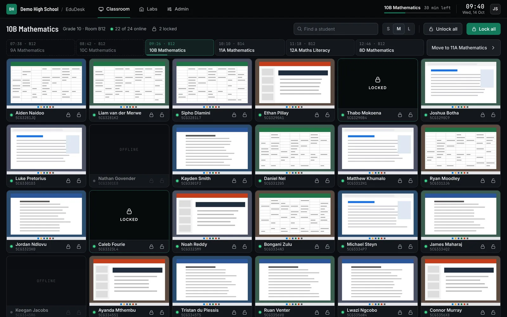
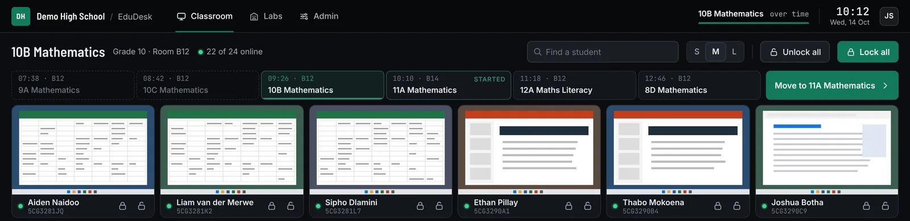
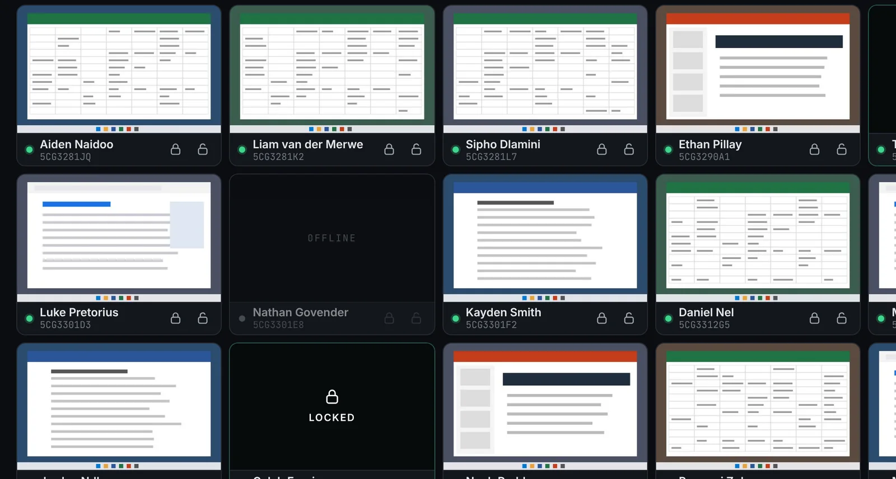
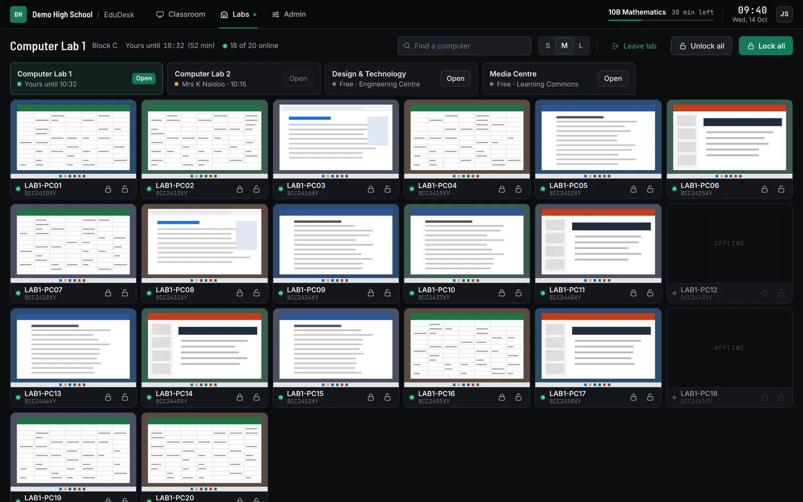
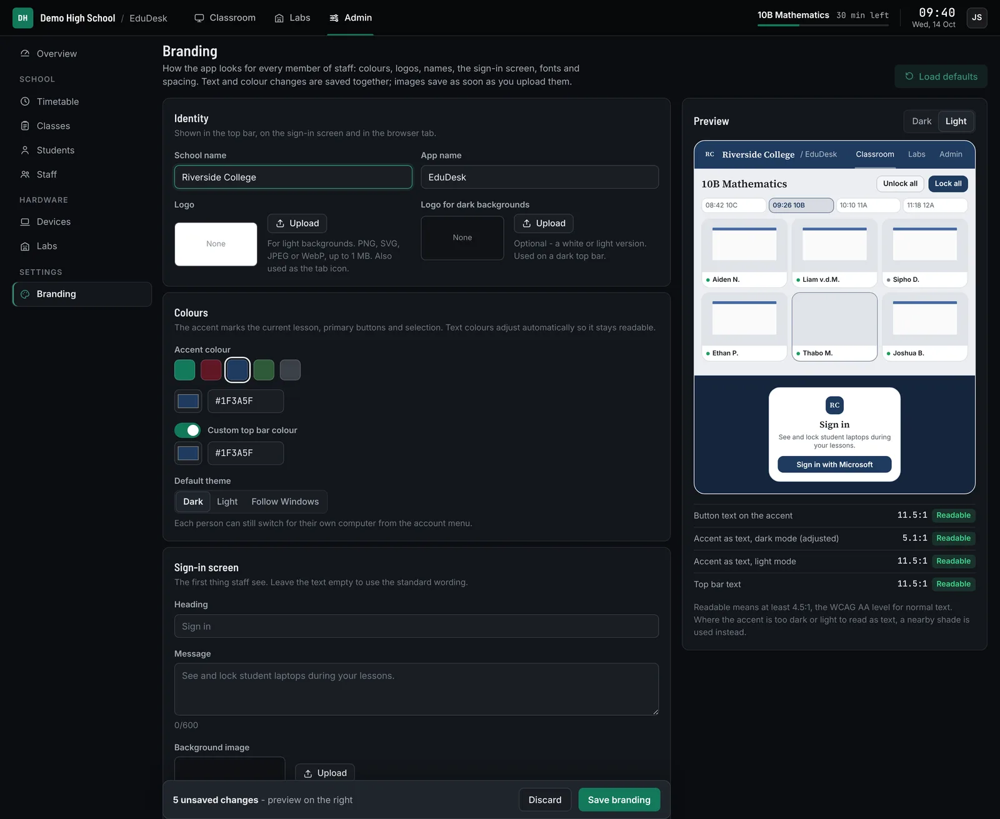
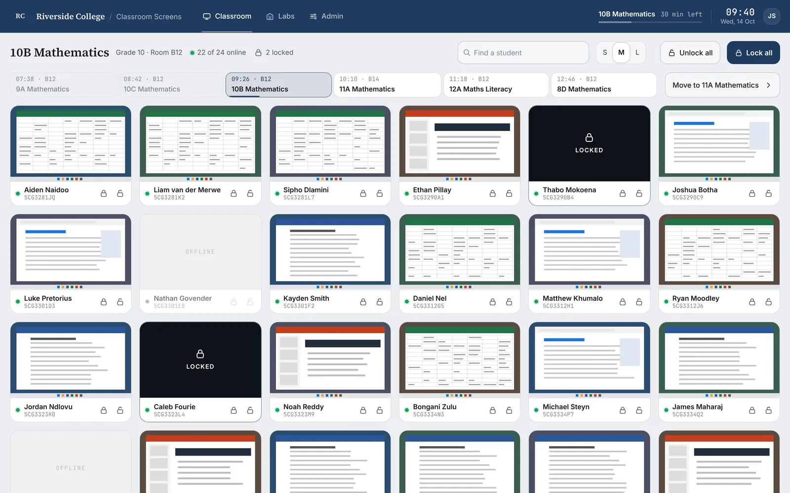
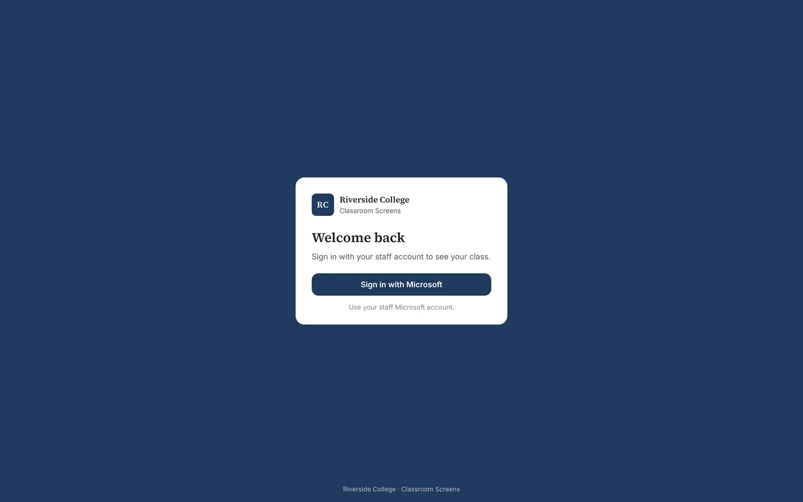
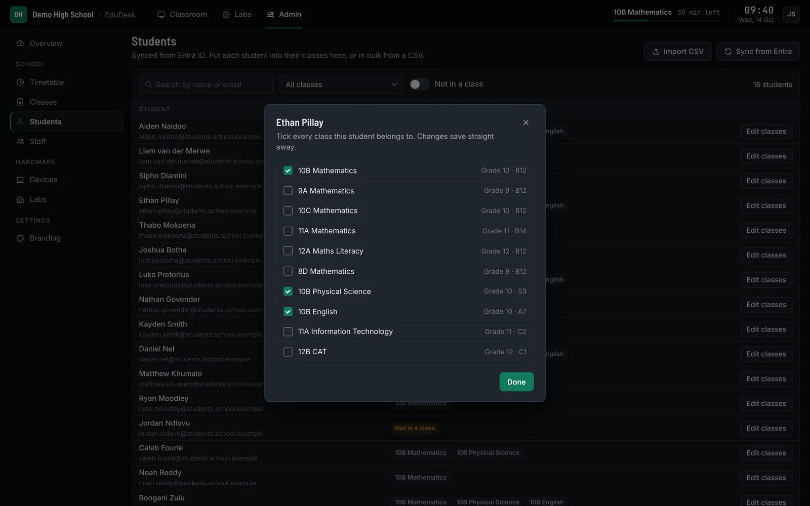

See every screen in the room. Lock them in one click.
EduDesk shows teachers the laptops of the class they're teaching right now, follows the timetable through the day, and runs under your school's own name and colours.

The classroom view for a teacher in their third lesson of the day. Names and screens are sample data.
Made for the lesson, not the IT office
Teachers don't pick devices from a list. They sign in, and their class is already there.
The right class, all day
Today's lessons sit in a strip above the screens. When the next lesson starts, EduDesk says so and the "Move to…" button becomes the main action. It never switches class on its own.
- Shows only the students in the current lesson
- Countdown to the end of the lesson in the top bar
- Students in several classes appear in each of them

Every screen at a glance
Thumbnails update live throughout the lesson. Each tile shows whose laptop it is, whether it's online, and whether it's locked. One click locks a single laptop or the whole room.
- Find a student by name
- Small, medium or large tiles
- Offline laptops are greyed out and skipped by Lock all

Labs on demand
Any teacher can open a computer lab at any time, separate from their timetable. One teacher holds a lab at a time, and the hold ends by itself after an hour (adjustable), so a lab is never left blocked.
- See who's using a lab and until when
- Limit a lab to certain staff, or leave it open to everyone
- Leave early to free it for the next teacher

It looks like your school's own app
Admins set the look on one page, with a live preview in dark and light. EduDesk checks that text stays readable and adjusts the accent shade where it needs to.



Everything set up in one place
Students and staff come from your Entra ID groups, and laptops from Intune or added by hand. You decide who's in which class, which laptop belongs to whom and which computers make up each lab.
- Teacher timetables, classes and rooms
- Bulk class assignment from a CSV file
- Admin rights for selected staff
- Audit log of locks, unlocks, sign-ins and changes
- Every delete asks for confirmation first

Rolls out with the MDM you already use
The EduDesk agent is a standard MSI that installs silently, with nothing for students or teachers to click. Assign it to your student laptops and lab computers in Intune or Configuration Manager, or push it with any tool that can install an MSI. It runs on Linux too.
- With Intune, EduDesk also keeps its device list up to date: new laptops appear in Admin › Devices by themselves
- Using something else? Add devices in Admin › Devices by serial number and hostname
- The same agent covers personal laptops and shared lab computers
Add the MSI as a line-of-business or Win32 app and assign it to your student device group.
Installs + device syncDeploy it as an application to a device collection.
InstallsAny tool that can install an MSI silently.
InstallsInstall the agent with the tools you already use to manage them.
InstallsSupervision, with limits built in
EduDesk is designed so teachers can keep a lesson on track without becoming a surveillance tool.
Thumbnails only
Screens are shown as small, low-quality previews. There is no full-size view of a student's screen anywhere in the app.
Only your class
Teachers see the students in the lesson they're teaching, or the lab they've opened. Not the whole school.
Microsoft sign-in
Staff sign in with their Microsoft account through Entra ID. EduDesk never sees or stores a password. Signing out of EduDesk doesn't sign anyone out of Outlook or Teams.
Everything logged
Locks, unlocks, class changes, lab use and admin changes are written to an audit log, with who did it and when.
Your server, your data
EduDesk runs on your own server with your own PostgreSQL database, so student and staff data stays with the school. Branding images are kept in that database too, so they're in your normal backups.
Careful with uploads
Logo and background uploads are checked by their actual file content and size-limited. SVG files that contain scripts are refused.
Three steps to the first lesson
Connect Microsoft 365
Register EduDesk in Entra ID for staff sign-in, and point it at your student, staff and laptop groups. Rosters and laptops then stay up to date in the background.
Deploy the EduDesk agent
Assign the agent to student laptops and lab computers in Intune, Configuration Manager or any tool that installs an MSI. It installs silently and provides the screen thumbnails and the lock.
Add timetables and brand it
Set up classes and teacher timetables, assign laptops to students, and set your colours and logo. Teachers can then simply sign in.
- Sign-in
- Microsoft Entra ID (a single-page app registration)
- Devices
- Windows or Linux student laptops and lab computers running the EduDesk agent
- Deployment
- Intune, Configuration Manager, Group Policy or any tool that can install an MSI. Intune can also keep EduDesk's device list in sync; otherwise devices are added by hand.
- Server
- A server on your network that runs Python and PostgreSQL, behind your reverse proxy
- Browsers
- Current Edge, Chrome or Firefox on staff computers
Frequently asked
Can a teacher open a student's screen at full size?
No. Screens only ever appear as small, low-quality thumbnails, and there's deliberately no way to enlarge one.
Does EduDesk move teachers to their next class automatically?
No. It tells the teacher when the next lesson has started and makes "Move to…" the main button, but the teacher decides when to switch.
Do we need Intune?
No. Any MDM or deployment tool that can install an MSI can roll out the agent, including Configuration Manager and Group Policy. Intune adds one extra: EduDesk keeps its device list in sync with it, so new laptops appear by themselves. Without it, admins add devices by serial number and hostname.
Does it work on Macs or Chromebooks?
Not at the moment. The EduDesk agent runs on Windows and Linux.
Can each teacher choose dark or light mode?
Yes. Admins pick the school default, and anyone can choose dark or light for their own computer from the account menu.
What happens if a teacher forgets to leave a lab?
The hold ends by itself after an hour (you can change the length), so the lab is free for the next teacher.
Where is our data stored?
In your own PostgreSQL database on your own server. EduDesk doesn't send student or staff data anywhere else.
See EduDesk with your own timetable
We'll walk you through a demo and talk through what your school needs.
Request a demo